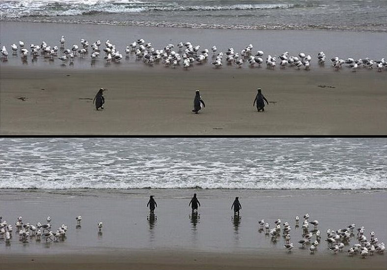

NGO CRM
where
CRM = C… Relationship Managementand
NGO = …

two links
to begin with

CRM
Contact Relationship Management
Constituent Relationship Management
… Relationship Management
contact database?
(spreadsheet?)
Entity Relationship Management
contacts
relationships
organisations
contributions
events
memberships
(demo)
tracking…
donors
volunteers
event participants
personal relations
cross-org relations
…?
customisations
custom data
custom templates
custom hooks
custom components

ownership!
how tied are you to your vendor?
do you have an emergency strategy?
do you have an exit vector?
do you own the data?
recap
entity relationship management
tracking crucial information
customisations
ownership!



closing things
user groups and trainings
(see civicrm.org/blog)